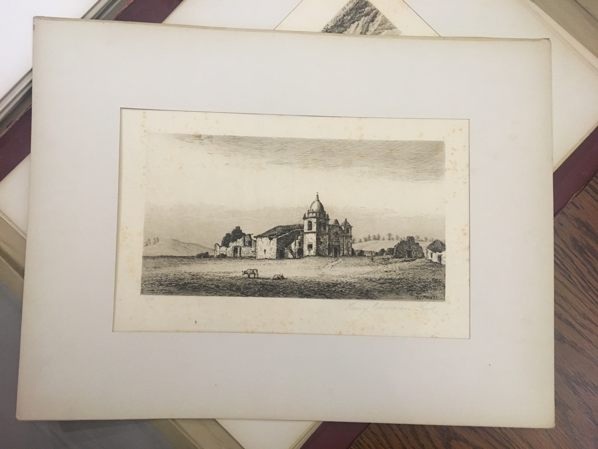
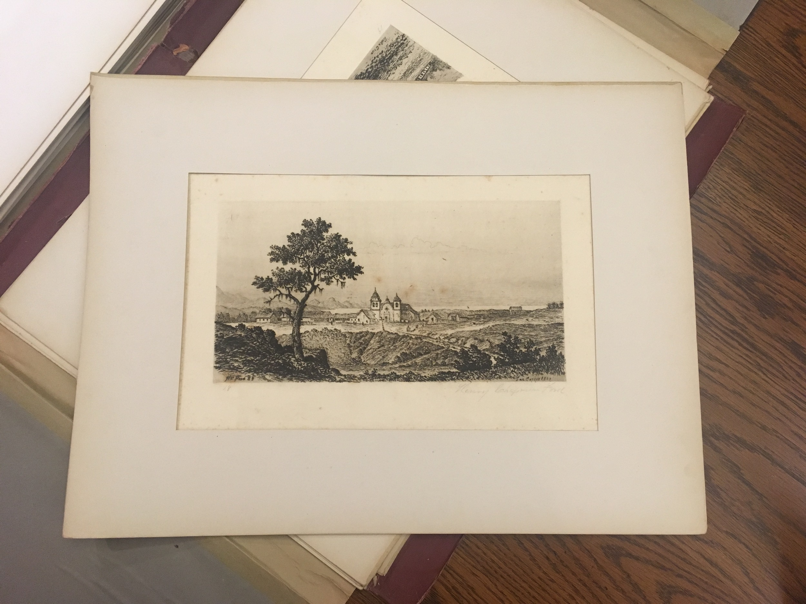

Etchings of the Franciscan Missions of California: With the Outlines of History, Description, Etc., Henry Chapman Ford, New York: Studio Press, 1883.
* F870.M6 F75. Number 17 of 24 etchings in this portfolio, portraying the second mission to be established in California. Mission San Carlos served as the seat of the Franciscan mission effort. Father Junipero Serra, founder of the missions, lived and work from this base. The mission appears here in a state of ruin, contributing to the idea of a Romanticized past Ford helped to foster in the popular American imagination of the state.

Etchings of the Franciscan Missions of California: With the Outlines of History, Description, Etc., Henry Chapman Ford, New York: Studio Press, 1883.
* F870.M6 F75. Henry Chapman Ford worked from historical photographs to depict many images of the California missions and landscape. Here, he portrays Mission San Carlos in 1834, at the end of its heyday and on the cusp of the secularizations taking place while California was part of an independent Mexican government.
Etchings of the Franciscan Missions of California: With the Outlines of History, Description, Etc. by Henry Chapman Ford, New York: Studio Press, 1883.
From the library of early California bibliographer Robert Ernest Cowan, Etchings of the Franciscan Missions of California by the artist Henry Chapman Ford was published in New York by Studio Press in 1883. The limited edition of 50 copies printed on Japan paper (copy thirty-seven owned by Cowan) portrays the 21 Spanish Franciscan missions of California in a Romantic style, each edifice shown in a state of ruin. The individual etchings contained within the portfolio are signed by the artist and numbered in order of their intended placement within the sequence. Situated within the context of Cowan’s collection, Ford’s series of etchings are evidently located within a canon of cultural production from the late 19th century that contributed to a specific popular American imagination of California.
Henry Chapman Ford was born in Livonia, New York in 1828 and studied art in Paris, France and Florence, Italy between 1857-1860.1 After serving briefly in the Union forces during the Civil War, Ford moved to Chicago where he was a founder of the Chicago Academy of Design (now the Art Institute of Chicago) in 1866.2 Finally settling in Santa Barbara, California in 1875, Ford became fascinated with the state’s history, natural beauty, and in the Spanish missions established along its coast. His drawings of these abandoned edifices, and particularly the series of etchings published as Etchings of the Franciscan Missions of California in 1883, are the best known among his body of work. Ford presented this series to a national audience at the Chicago World’s Fair in 1893, bringing the ruinous state of the California missions to the attention of the American public.3 Ford was thus a major force in fostering a public interest in the Romantic imagination of the state.
Very few printers and publishers were operating in the American West during the 19th century. As a result, only a handful of artists contributed to the development of images of California and the American West through the 1880s, among them Henry Chapman Ford.4 With the discovery of California gold in 1848 followed by the discovery of Nevada silver in 1859, public interest in the Western region of the United States increased. Though interest was piqued, very little actual knowledge of the conditions and climate of the West circulated throughout the Eastern region longer occupied and established by Americans. Depictions of California’s natural scenery through images like those by Ford were integral to the American public’s understanding of the landscape and living conditions on the other side of the American continent.
Grey skies, dramatic cloud formations, and buildings in ruin steep Ford’s Etchings of the Franciscan Missions of California with a Romanticism that can only be fully appreciated in contrast to the bustle of industrializing American cities hundreds of miles away. While San Francisco was a well-established, cosmopolitan city in its own right by the mid-19th century, its location on the other side of the little explored and sparsely populated region beyond the Midwest and Rocky Mountains contributed to an understanding of the city and the West Coast in general as culturally foreign. 5 Indeed, California’s Spanish colonial history separated it from the English colonial historical base of the country’s East Coast.
Ford’s portfolio of prints is numbered in order of encounter from South to North much as travelers through the state would encounter the missions along a journey. Each image is entered by the viewer by way of a path leading from the frame of image edge and meandering toward the particular mission featured. This journistic encounter established by Ford through the particular order of his portfolio is effective in conveying a sense of adventure through movement of travel. It is important to note that while a handful of printers existed in California at the time Ford published this series of work, ultimately it was New York’s Studio Press who published the portfolio, asserting that these images were meant for a national, metropolitan audience.
Ford created his work in a time of robust cultural production related to California’s cultural history and natural legacy. John Muir traveled to California in exploration of its natural beauty in 1868,6 publishing several dispatches from his travels throughout the state’s northern region before releasing his influential book My First Summer in the Sierra in 1911.7 Author Bret Harte published numerous short stories and novels contributing to the literary canon of California and the American West in a prolific career starting in the 1850s from his home in the San Francisco Bay area, through the turn of the 20th century after his move to the East Coast.8 Helen Hunt Jackson’s Ramona, a novel depicting life in California and written with the intent to influence public sympathy for the plight of California’s indigenous people, was first published in 1884—just a year after Ford’s publishing of Etchings of the Franciscan Missions of California. Jackson's novel was wildly successful, with 13 printings of the first edition up to 1912, and subsequent editions published up through 2008.9 Its release coinciding with the opening of the Southern Pacific Railroad’s terminus in California, Ramona prompted throngs of visitors to Southern California10 and their Romantic ideal of the Spanish-settled other coast with the ruins of the state’s Franciscan Missions, as illustrated by Ford in their minds.
Notes
1 Danielle Peltakian, “HENRY CHAPMAN FORD (1828-1894) - ETCHER & PAINTER.” [http://www.sullivangoss.com/henrychapman_Ford/], accessed February 22, 2018.↩
2 “Henry Chapman Ford - A Southern California Glen.” [http://www.artoftheprint.com/artistpages/ford_henry_chapman_southern_california_glen.htm], accessed February 22, 2018.↩
3 Danielle Peltakian, “HENRY CHAPMAN FORD (1828-1894) - ETCHER & PAINTER.” [http://www.sullivangoss.com/henrychapman_Ford/], accessed February 22, 2018.↩
4 Raymond L. Wilson, “Prints on the American Frontier,” Print Quarterly 16, no. 2 (1999): 139–47.↩
5 Ibid.↩
6 “John Muir Biography - John Muir Exhibit,” [https://vault.sierraclub.org/john_muir_exhibit/life/muir_biography.aspx], accessed February 23, 2018. ↩
7 “‘My First Summer in the Sierra’ by John Muir (1911) - The Writings of John Muir - John Muir Exhibit (John Muir Education Project, Sierra Club California),” [https://vault.sierraclub.org/john_muir_exhibit/writings/my_first_summer_in_the_sierra/], accessed February 23, 2018.↩
8 Scharnhorst, Gary. Bret Harte. Twayne’s United States Authors Series, TUSAS 600. New York : Toronto : New York: Twayne ; Maxwell Macmillan Canada ; Maxwell Macmillan International, 1992.↩
9 Caitlin Rose Conley, “Helen Hunt Jackson’s Ramona: A Critical Edition” (University of Virginia, 2014), p. 70-74. ↩
10 “Ramona.” [https://en.wikipedia.org/wiki/Ramona], accessed February 15, 2018.↩
This spotlight exhibit by Megan Sallabedra as part of Dr. Johanna Drucker's "History of the Book and Literacy Technologies" seminar in Winter 2018 in the Information Studies Department at UCLA.
For documentation on this project, personnel, technical information, see Documentation. For contact email: drucker AT gseis.ucla.edu.